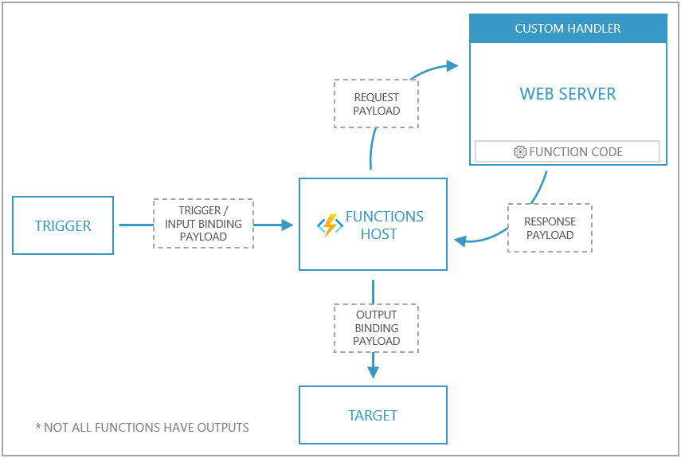
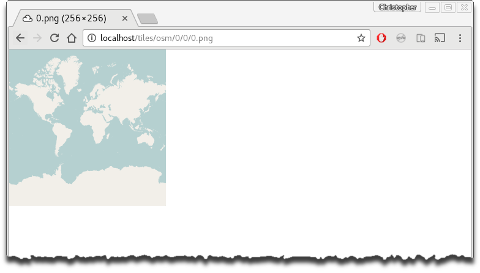

In this post we look at how we can write an Azure Function in any language. We do this by creating a simple web service in our language of choice (Scala), and then using it as a custom handler from a host Azure Function.
In this post we look at how we create an Azure Function in Scala by making small changes to a basic Java function.
Loading spatial data to Snowflake can be a little awkward. Here we describe a simple and performant approach using the ODBC or JDBC drivers from R.
There are many ways we can deploy Shiny applications for external consumption. This post describes several possible methods.
Does it bother you when you’re forced to fetch features via an API, instead of just downloading a file from a file server? Same! As a solution of sorts, I wondered how easily we could make a service which could used to download features directly in a requested format.
Shiny provides a low-entry option for R programmers to develop single-page web applications. But, in my opinion, it is over-used. In this post we consider where Shiny might be a good option, and where it might not.
In this post we attempt to approximate a household survey collection as an agent-based simulation. The simulation designed using the actor model, and implemented in Scala using Akka.
Sometimes creating a bespoke data service is easy enough. But maybe sometimes it’s just easier to expose data that already exists in a database. Here we consider a couple of options, PostGraphile and PostGREST, for doing just that.
Imagine an online learning scenario where we wish to update an existing model using streaming event data, say. Here we consider how we might approach such a problem using the actor model as implemented by Akka.
Imagine an online learning scenario where we wish to update an existing model using streaming event data, say. Here we consider how we might approach such a problem using Apache Kafka.
Here we look at how we can leverage PostgreSQL and the PostGIS extension to usefully complement R, mostly by offloading large geoprocessing tasks, and as a library for storing large feature classes for shared use across a potentially large userbase.
X13-ARIMA-SEATS is a widely used seasonal adjustment program developed by the U.S. Census Bureau. Here we look at how one might go wrapping this program as a web service for remote execution.
Sending large vector features over-the-wire for use in slippy maps is bad, m’kay. One possible solution is to appeal to a tile service or similar, and here we look at how we might leverage the GeoServer API to enable end-users to quickly deploy their own tile sets on-the-fly.
In this post we look at how we can use QGIS Server to publish a range of services using WMS, WFS and WCS.

When making maps for display on the web, the size of the various objects being rendered can quickly become overwhelming. One solution is to appeal to a tile service, and here we consider one approach using Mapnik and TileStache.
I often find myself needing to establish the travel time or distance between arrays of addresses from R. Here we describe how we can use a local install of Open Source Routing Machine as a solution which is highly performant, and relatively easy to implement.